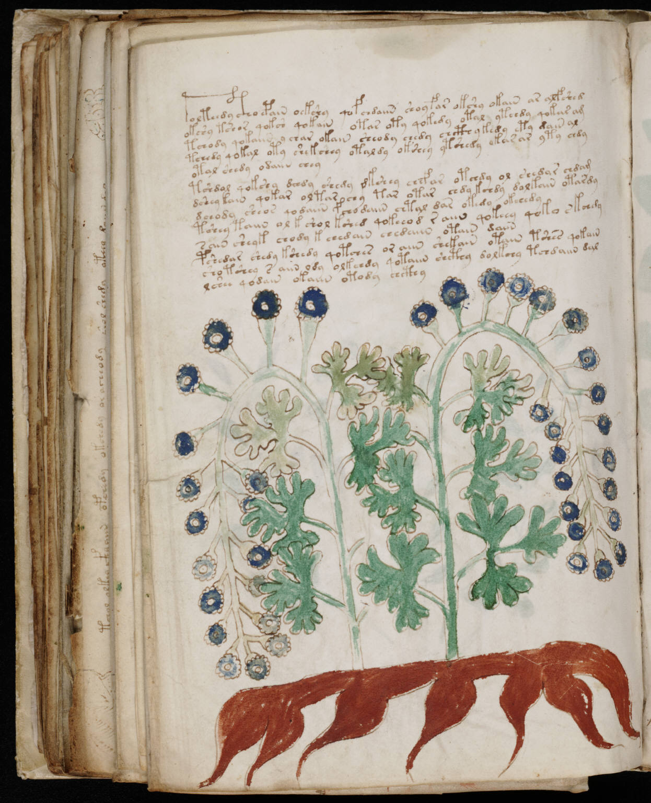

f95v1
1tolteedy cthoepain oekshy qofchdaiin shoyfar okshy okain ar alfshed2okshy tshor qoksh qokain otar oty qokedy otal ytchdy qokar am3tchody qokaiin ychar okain sheody chedy chcthy kedy ety dain al4tchedy qokal oty shekshey otaldy okshey ytshedy akarar yty chdy5otal shedy odaiin chey6tshdol qokshy dchdy shedy dkshey chefar otchdy ol shedar chdam7dshey kain qokar oltar chy tar otar chdy kchdy dolkain otardy8dchody sheos qodaiin fchodaiin chtal dar okedy okchedy9tshey taiin ol kshol kshed qokeeod raiin qokeey qoko skchdy10sain sheyk chody kchedaiin chedaiin otain daiin11pshedar shedy kshedy qotches or aiin shekain otain tshes qokain12sho tshey s aiin ody olkchdy qotaiin shcthy dolkchy tchdaiin dal13lshee qodain okaiin otody chcthy
